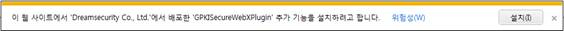
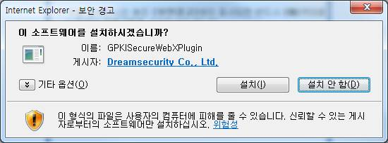
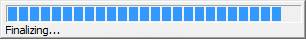

Windows-IE를 사용하시는 경우
01 브라우저 상단 또는 하단에 "GPKISecureWebXPlugin"을 설치하라는 노란 바가 나타나면, 노란 바의 설치를 클릭하여 "Active X 컨트롤설치…"를 실행 합니다.

* 키보드로 실행하는 방법
- Alt+N 키를 누르면 Active X를 실행시킬 수 있도록 포커스가 이동됩니다.
- 포커스 이동 후 Space 바를 누르고 Active X 컨트롤 설치(이 컴퓨터에 있는 모든 사용자를 위해 이 추가 기능 설치) 메뉴를
방향키로 선택하여 설치하시면 됩니다.
02 보안경고 화면에서 [설치] 버튼을 누릅니다.

03 아래 화면과 같이 설치과정이 진행됩니다.

04 설치 과정 진행 중 '암호화 프로그램이 이미 실행중입니다.열려 있는 프로그램과, 사이트에 연결한 웹 브라우저를 모두
닫은후에 다시 프로그램을 삭제해 주시기 바랍니다.' 라는 메지시 박스가 나오면 해당 브라우저를 닫고 다시 시도 하시기 바랍니다.
05 설치가 완료되면 Windows XP인 경우 브라우저를 재시작하여 이용하시면 됩니다.
- 계속 진행이 되지않는 경우에는 수동설치를 해보시기 바랍니다.